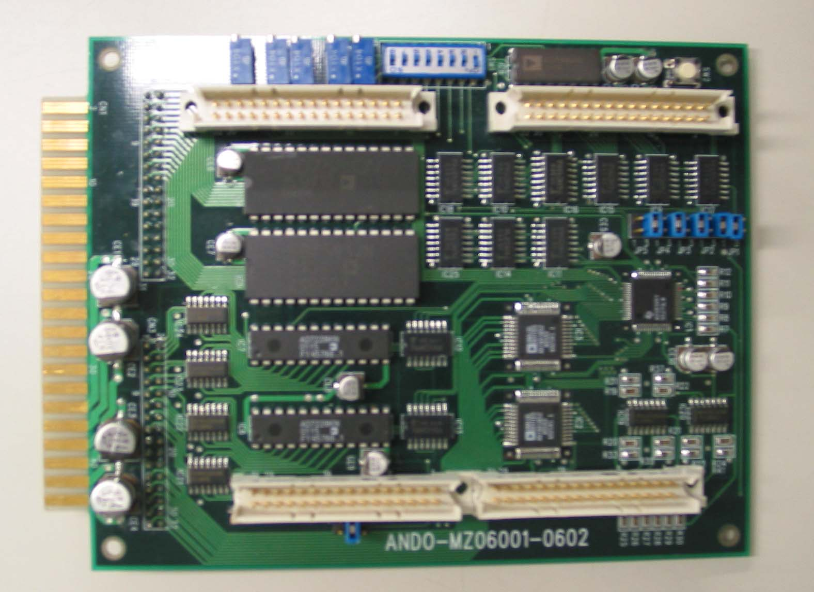

アナログ信号ボードの写真です。 AD変換は16 bit と 8 bit を合わせて22チャンネル、 DA変換は14 bit と 8 bit を合わせて24チャンネルあります。
■AD変換器:ads8364\(\times\)1 / TEXAS INSRUMENTS製
分解能:16 bit
チャンネル数:6
オペアンプアナログフィルター(入力): カットオフ周波数 700 Hz\(\times\)6
■AD変換器:AD7581\(\times\)2 / ANALOG DEVICES製
分解能:16 bit
チャンネル数:8
■DA変換器:AD7841\(\times\)2 / ANALOG DEVICES製
データ幅:14 bit
チャンネル数:8
オペアンプアナログフィルター(出力):カットオフ周波数 700 Hz\(\times\)16
■DA変換器:AD7228\(\times\)2 / ANALOG DEVICES製
データ幅:8 bit
チャンネル数:8